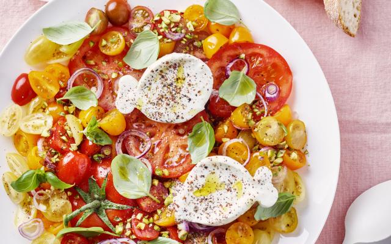

Kleurrijke tomatensalade met burrata en pistaches

Ingrediënten
- 800 g tomaten in verschillende kleuren
- 250 g burrata
- 1 rode ui
- 1 handje basilicum (voor de afwerking)
- 2 el citroensap
- 30 g pistaches
- 1 stokbrood
- 1 kl honing
- 2 el wittewijnazijn
- olijfolie
- peper
- zout
Bereiding
-
Pel de rode ui en snij hem in dunne ringen. Spoel de tomaten. Snij de
grote tomaten in plakjes en halveer de kerstomaatjes. Schep de tomaten
op een grote serveerschaal, verdeel er de rode ui over en leg er de
burrata bij. Kruid alles met peper en zout.
-
Maak een zoetzure dressing van het citroensap, de wittewijnazijn, de
honing en een scheutje olijfolie. Kruid hem met peper en zout. Hak de
pistachenoten fijn.
-
Druppel een beetje van de dressing over de tomaten en de burrata. Werk
de salade af met de fijngehakte pistachenoten en het basilicum. Serveer
met het stokbrood en de rest van de dressing.